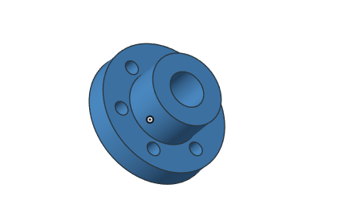

多孔法兰与加强筋结构
将环形底座、阶梯轴套、两组螺栓孔与周向加强筋组织成一个工程零件。比单次布尔运算更进一步，观察多种结构在同一模型中的空间关系。
模型结构与观察重点
- 12 个底座安装孔与 8 个上法兰连接孔
- 贯穿内孔、阶梯轴套与双层法兰
- 8 道径向加强筋连接轴套与底座
如何查看这个案例
在首页案例区选择“多孔法兰与加强筋结构”对应的标签，使用鼠标拖动旋转、滚轮缩放或右键平移。通过网格显示查看离散结构，使用复位视角恢复初始观察位置。

示意范围与实际验证
这里的交互模型在浏览器中生成，用于解释工程结构和几何关系，并非 GME 内核导出的精确计算结果。实际应用需结合对应模块、输入参数、容差及版本测试；本页不提供性能或精度对比结论。